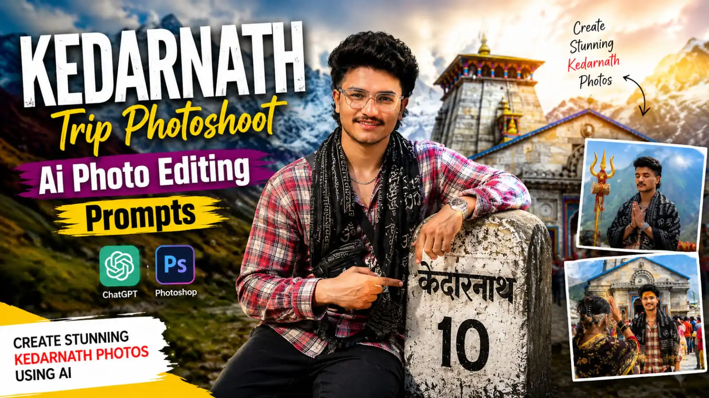
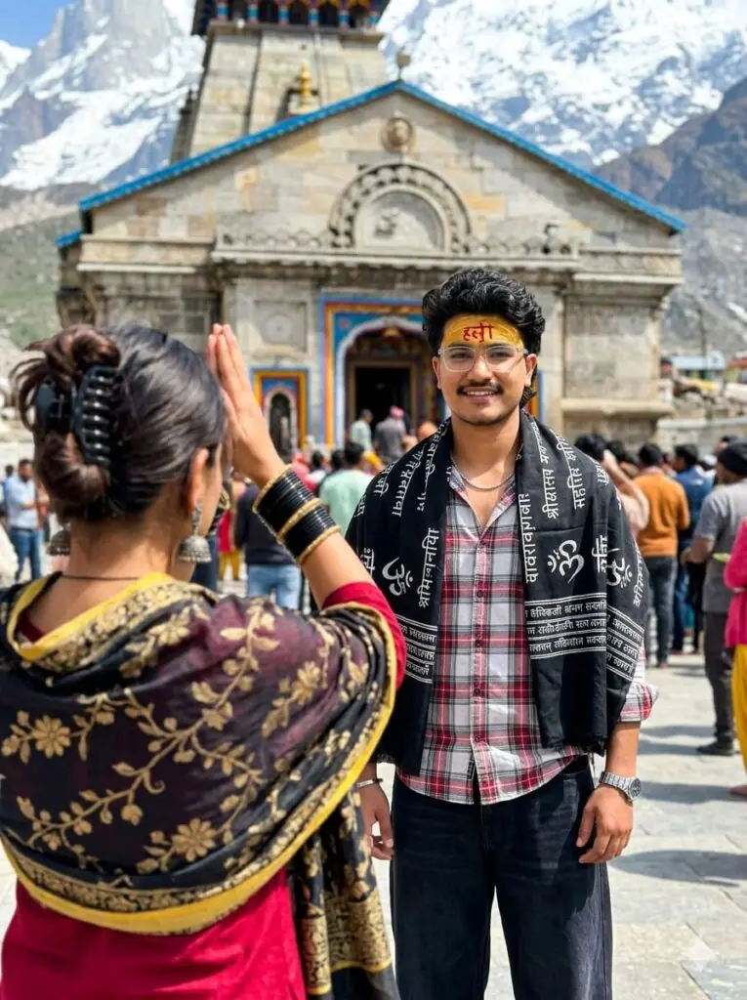
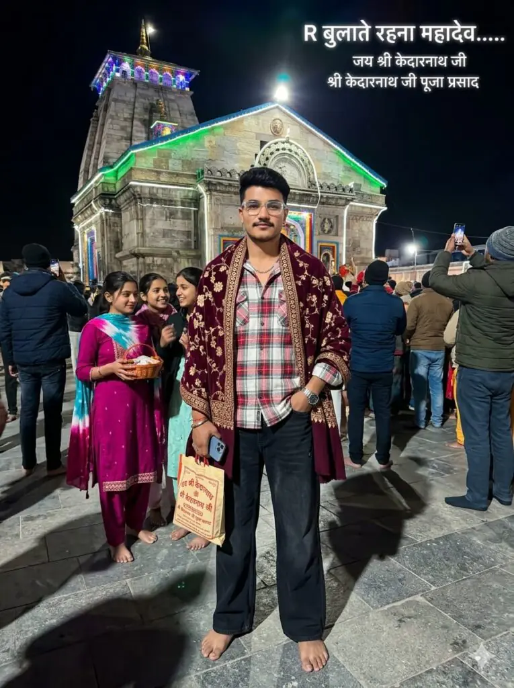
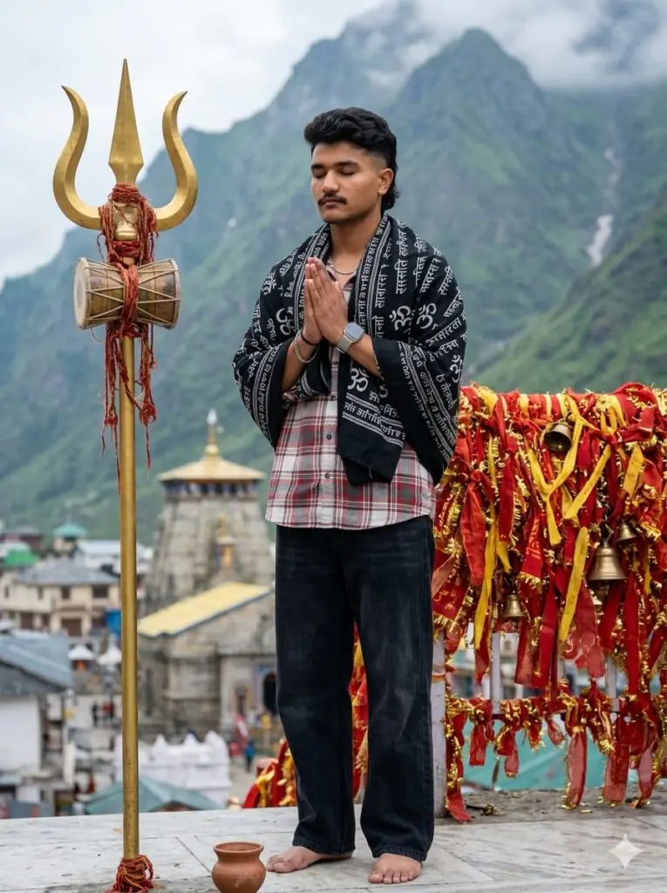
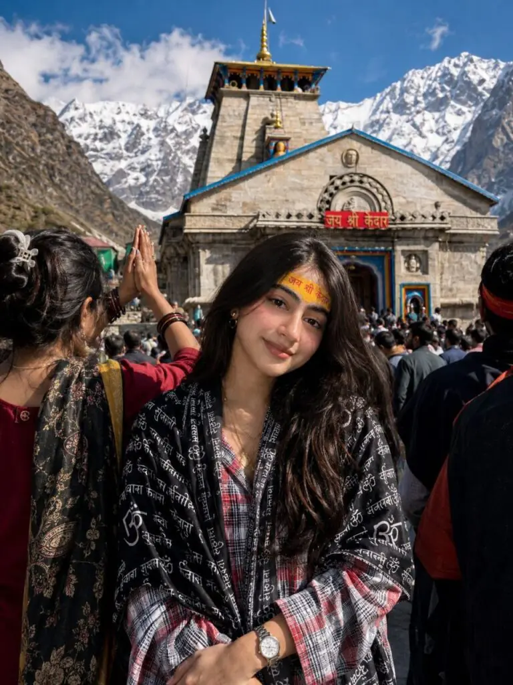
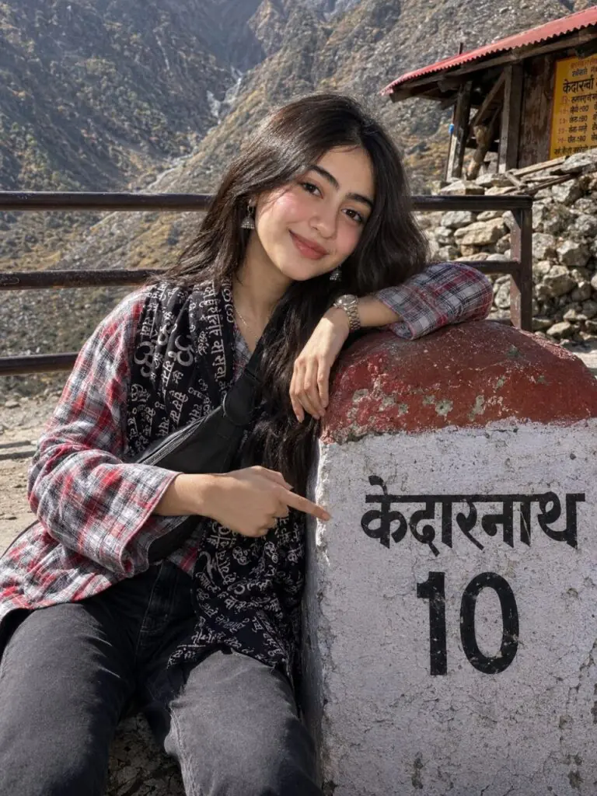
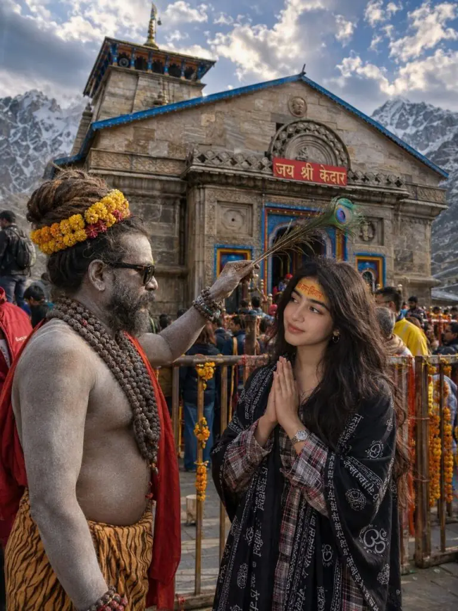

Home / Kedarnath Trip Photoshoot Ai Photo Editing Prompts For Boys & Girls
Kedarnath Trip Photoshoot Ai Photo Editing Prompts For Boys & Girls
By Prompt Library•4 June 2026

Kedarnath is one of the most beautiful and spiritual destinations in India. Every year thousands of travelers, pilgrims, photographers, and content creators visit Kedarnath to capture unforgettable memories.
However, not everyone gets the perfect photo during their trip.Thanks to AI photo editing tools, you can now create professional-looking Kedarnath travel photos without expensive cameras or advanced editing skills.
By using detailed AI photo editing prompts, anyone can generate realistic Kedarnath-themed images featuring temples, mountains, milestones, spiritual scenes, and cinematic travel portraits.
Want more awesome prompts?
Join our community and get the latest viral prompts daily.
ULTRA-REALISTIC 8KCINEMATIC PORTRAIT OF A STYLISH YOUNG INDIAN MAN (USE EXACT FACE
FROM UPLOADED IMAGE, FACE MUST MATCH PERFECTLY].
A HIGHLY DETAILED, PHOTOREALISTIC IMAGE CAPTURING A SPIRITUAL MOMENT OUTSIDE THE MAJESTIC STONE KEDARNATH TEMPLE. IN THE CENTRE FOREGROUND STANDS AN ASH-SMEARED SADHU WEARING DARK SUNGLASSES, NUMEROUS LAYERED RUDRAKSHA BEAD NECKLACES, AN ELABORATE YELLOW AND RED FLORAL HEADDRESS, A DRAPED RED CLOTH OVER ONE SHOULDER, ANDA TIGER-PRINT LOWER GARMENT. HE IS HOLDING A BUNDLE OF PEACOCK FEATHERS HORIZONTALLY OVER THE MAN HEAD IN A BLESSING GESTURE OR INTERACT WITH A YOUNG MAN STANDING BEFORE HIM. THE 17 YEARS OLD YOUNG VOLUMINOUS, MESSY DARK WAVY HAIR AND A CLEAN TAPER FADE ON THE SIDES AND THE BACKOF THE HAIR IS LONG AND FLOWS DOWN TO THE NAPE OF THE NECK, IS LOOKING AT HIM WITH A SOFT SMILE, HIS HANDS FOLDED IN A RESPECTFUL NAMASTE, DRESSEDIN A BLACK SHAWL HEAVILY DRAPED OVER HIS SHOULDERS, INTRICATELY PRINTED WITH WHITE SANSKRIT CALLIGRAPHY AND SACRED'3' SYMBOLS, LAYERED OVER A RED, WHITE, ANDGREY PLAID LONG-SLEEVE BUTTON-DOWN OVERSIZED SHIRT (PARTIALLY UNBUTTONED AT THE TOP), LOOSE-FITTING WIDE-LEG BLACKJEANS (USE UPLOADED DRESS), OUTFIT MUST LOOK REALISTIC WITH DETAILED FABRIC FOLDS, TEXTURE, SHADOWS, AND NATURAL CLOT HING PHYSICS. HE ACCESSORIZES WITH A THIN SILVER CHAIN NECKLACE AND A SILVER WRISTWATCH. OUTFIT MUST LOOK REALISTIC WITH DETAILED FABRIC FOLDS, TEXTURE, SHADOWS, AND NATURAL CLOT HING PHYSICS. FOREHEAD DETAILS: A BROAD SMEAR OF YELLOW SANDALWOOD PASTE ON THE FOREHEAD WITH BRIGHT RED HINDI TEXT '3HST WRITTEN OVER IT. THE TILAK SHOULD LOOK AUTHENTIC AND NATURALLY APPLIED.
DIRECTLY BEHIND THEM IS THE ICONIC, INTRICATELY CARVED STONE FACADE OF THE KEDARNATH TEMPLE. THE MAIN TEMPLE ENTRANCE IS FRAMED IN BRIGHT BLUE AND YELLOW PAINT, WITH A PROMINENT RED SIGN ABOVE THE DOOR READINC "जय श्री केदार" IN HINDI SCRIPT. METAL BARRICA DES WRAPPED IN SACRED RED AND YELLOW THREADS AND MARIGOLD FLOWERS SEPARATE THE MAIN SUBJECTS FROM A BUSTLING CROWD OF PILGRIMS. A DRAMAT ORAMATIC, PARTLY CLOUDY SKY RISES OVER THE TEMPLE. AT THE TOP CENTER OF THE IMAGE, HOVERING IN THE SKY.
ASPECT RATIO 3:4
In this article, you’ll get access to powerful Kedarnath Trip Photoshoot AI Photo Editing Prompts that can help you create stunning images similar to viral Instagram reels, YouTube thumbnails, and travel photography posts.

? AI PROMPT
HYPER-REALISTIC 8K CINEMATIC PORTRAIT OF A FASHIONABLE YOUNG INDIAN MALE [REPLICATE EXACT FACIAL FEATURES FROM THE REFERENCE PHOTO, FACE MUST BE A PERFECT MATCH].
A FASHIONABLE 17-YEAR-OLD INDIAN YOUNG MAN POSITIONED IN FRONT OF THE GRAND KEDARNATH TEMPLE DURING DAYTIME, SMILING GENUINELY TOWARD THE CAMERA, MEDIUM-WIDE PORTRAIT FRAMING, VIVID SUNNY HIMALAYAN AMBIENCE, SNOW-CAPPED PEAKS CLEARLY SEEN IN THE BACKDROP, AUTHENTIC TEMPLE STRUCTURE WITH VIBRANT DECORATIVE ENTRANCE ELEMENTS, A LARGE GATHERING OF DEVOTEES SURROUNDING HIM ESTABLISHING A LIVELY SPIRITUAL ENERGY.
THE YOUNG MAN FEATURES THICK, TOUSLED DARK WAVY HAIR WITH A CLEAN TAPER FADE ON THE SIDES, THE BACK OF THE HAIR GROWING LONG AND TOUCHING THE NAPE OF THE NECK, LIPS CURVED INTO A GENTLE SMILE, AND A WIDE APPLICATION OF YELLOW SANDALWOOD PASTE ON THE FOREHEAD WITH VIVID RED HINDI LETTERING WRITTEN ACROSS IT. THE TILAK APPEARS GENUINE AND ORGANICALLY APPLIED ON HIS BROW. HE IS DRAPED IN A BLACK SHAWL HEAVILY WRAPPED OVER HIS SHOULDERS, DENSELY PRINTED WITH WHITE SANSKRIT-STYLE CALLIGRAPHY AND SACRED OM MOTIFS, LAYERED OVER A RED, WHITE, AND GREY PLAID FULL-SLEEVE OVERSIZED BUTTON-DOWN SHIRT (CASUALLY OPEN AT THE COLLAR), PAIRED WITH RELAXED WIDE-LEG BLACK DENIM JEANS (BASED ON UPLOADED OUTFIT), CLOTHING MUST APPEAR PHOTOREALISTIC WITH PRECISE FABRIC CREASES, MATERIAL TEXTURE, NATURAL SHADOWS, AND AUTHENTIC CLOTHING PHYSICS. ACCESSORIES INCLUDE A DELICATE SILVER CHAIN NECKLACE AND A SILVER ANALOG WRISTWATCH. HANDS HANGING COMFORTABLY IN A NATURAL FRONT STANCE, CINEMATIC POSTURE, LIFELIKE FACIAL RENDERING, RAZOR-SHARP SKIN DETAIL, ORGANIC LIGHTING, DSLR-GRADE IMAGE QUALITY.
IMPORTANT: INCLUDE A 17-YEAR-OLD ATTRACTIVE YOUNG GIRL PARTIALLY VISIBLE IN THE LEFT FOREGROUND CORNER EXACTLY MATCHING THE REFERENCE COMPOSITION — SEEN FROM BEHIND WITH ONLY A PARTIAL BODY VISIBLE. DARK HAIR GATHERED INTO A LOOSE, UNDONE BUN HELD WITH A CLAW CLIP, WITH SOFT WISPY STRANDS DRAPING NATURALLY ALONG HER NECK AND CHEEK. SHE IS DRESSED IN A DEEP CRIMSON OUTFIT AND COVERED IN A DARK WRAP FEATURING SEMI-TRANSPARENT GOLDEN-BEIGE FLORAL AND PAISLEY MOTIFS WITH A SOLID YELLOW TRIM, SHE WEARS CHUNKY BLACK BANGLES ON HER LEFT WRIST AND LONG SILVER OXIDIZED EARRINGS, BOTH ARMS RAISED STRAIGHT IN A PRAYER GESTURE DIRECTED TOWARD THE KEDARNATH TEMPLE, SLIGHT FOREGROUND BOKEH BLUR FOR DEPTH, PRESERVING THE SAME ANGLE AND LAYOUT AS CANDID TRAVEL PHOTOGRAPHY. ALSO PLACE ANOTHER PARTIALLY CROPPED CROWD FIGURE ON THE RIGHT EDGE FOR REALISTIC SCENE FRAMING.
THE OVERALL SCENE SHOULD EVOKE AN AUTHENTIC PILGRIMAGE TRAVEL PHOTOGRAPH, ULTRA-DETAILED CROWD RENDERING, CINEMATIC DEPTH OF FIELD, ORGANIC SHADOWS, BRILLIANT BLUE SKY, REALISTIC HIMALAYAN ATMOSPHERE, CAPTURED ON SONY A1, 85MM PRIME LENS, F/1.8 APERTURE, HDR PROCESSING, HYPERREALISTIC DETAIL, PROFESSIONAL-GRADE TEXTURE RENDERING, TRAVEL PHOTOGRAPHY AESTHETIC, RAW PHOTO OUTPUT QUALITY, TRUE-TO-LIFE COLOR GRADING, INSTAGRAM-WORTHY COMPOSITION, DEVOTIONAL AND SERENE ATMOSPHERE.
ASPECT RATIO 3:4
AI photo editing prompts allow you to transform ordinary photos into cinematic travel portraits. Instead of spending hours editing images manually, you can simply upload your photo and use a detailed prompt.

? AI PROMPT
HYPER-REALISTIC 8K CINEMATIC WIDE-ANGLE SHOT OF A FASHIONABLE YOUNG INDIAN MALE [REPLICATE EXACT FACIAL FEATURES FROM THE REFERENCE PHOTO, FACE MUST BE A PERFECT MATCH].
A HIGHLY PHOTOREALISTIC NIGHTTIME IMAGE OF A 17-YEAR-OLD YOUNG INDIAN MALE WITH THICK, TOUSLED DARK WAVY HAIR AND A NEAT TAPER FADE ON THE SIDES, THE REAR HAIR GROWING LONG AND GRAZING THE NAPE OF HIS NECK, STANDING BAREFOOT AT THE CENTER FOREGROUND WITHIN THE KEDARNATH TEMPLE COURTYARD. HE IS DRESSED IN A RED, WHITE, AND GREY PLAID FULL-SLEEVE OVERSIZED BUTTON-DOWN SHIRT (CASUALLY OPEN AT THE COLLAR), PAIRED WITH RELAXED WIDE-LEG BLACK DENIM JEANS (BASED ON UPLOADED OUTFIT), WITH A LAVISH DEEP BURGUNDY WRAP DRAPED GRACEFULLY OVER HIS SHOULDERS, ADORNED WITH INTRICATE TRADITIONAL EMBROIDERY — SCATTERED SMALL GOLD FLORAL MOTIFS ACROSS THE MAIN SURFACE AND A HEAVY BORDER WITH ELABORATE GOLD, GREEN, AND RED GEOMETRIC AND FLORAL DESIGNS. ALL CLOTHING MUST RENDER PHOTOREALISTICALLY WITH PRECISE FABRIC CREASES, MATERIAL TEXTURE, NATURAL SHADOW PLAY, AND AUTHENTIC CLOTHING PHYSICS. HE WEARS A SLENDER SILVER CHAIN NECKLACE AND A SILVER ANALOG WRISTWATCH. ONE HAND GRIPS AN IPHONE 17 PRO WHILE THE OTHER HOLDS A SOUVENIR CARRY BAG PRINTED WITH A TEMPLE ILLUSTRATION AND HINDI TEXT READING "जय श्री केदारनाथ जी" AND "श्री केदारनाथ जी पूजा प्रसाद", THE OTHER HAND TUCKED CASUALLY INTO HIS POCKET AS HE FACES THE CAMERA WITH A RELAXED, GENTLE SMILE.
IN THE BACKGROUND, A CLUSTER OF YOUNG WOMEN STAND TOGETHER CONVERSING. ONE AMONG THEM SUBTLY TURNS AROUND TO GLANCE BACK AT THE YOUNG MAN, ESTABLISHING SOFT MUTUAL EYE CONTACT. HER EXPRESSION CARRIES A ROMANTIC YET BASHFUL QUALITY — A DELICATE SMILE AND SLIGHTLY DOWNCAST EYES. SHE IS ADORNED IN A VIVID MAGENTA-PINK TRADITIONAL INDIAN KURTA WITH A COORDINATING TIE-DYE DUPATTA ELEGANTLY DRAPED OVER HER HEAD, CRADLING A TRADITIONAL RED WOVEN BASKET BRIMMING WITH TEMPLE OFFERINGS, AND BEARING A CLASSIC RED TILAK ON HER FOREHEAD. THE REMAINING YOUNG WOMEN CONTINUE THEIR CHEERFUL EXCHANGE, SOME LAUGHING AND RESPONDING ANIMATEDLY.
THE BACKDROP FEATURES A DENSE GATHERING OF WINTER-CLAD PILGRIMS, SOME WITH PHONES RAISED TO PHOTOGRAPH THE SURROUNDINGS. RISING BEHIND THEM IS THE MAGNIFICENT STONE FACADE OF KEDARNATH TEMPLE, DRAMATICALLY ILLUMINATED WITH BRILLIANT WHITE, GREEN, AND BLUE FESTIVE LIGHTING AGAINST A DEEP BLACK NIGHT SKY. THE COURTYARD FLOOR CONSISTS OF BROAD FLAT STONE SLABS REFLECTING THE BRIGHT ILLUMINATION AND CASTING ELONGATED SHADOWS. LIGHTING STYLE IS SIMULATED DIRECT FLASH TRAVEL PHOTOGRAPHY.
IN THE UPPER RIGHT CORNER, A GLOWING WHITE HINDI TEXT OVERLAY READS:
"बुलाते रहना महादेव......
जय श्री केदारनाथ जी
श्री केदारनाथ जी पूजा प्रसाद"
ASPECT RATIO 3:4

? AI PROMPT
HYPER-REALISTIC 8K CINEMATIC PORTRAIT OF A FASHIONABLE YOUNG INDIAN MALE [REPLICATE EXACT FACIAL FEATURES FROM THE REFERENCE PHOTO, FACE MUST BE A PERFECT MATCH].
A 17-YEAR-OLD YOUNG INDIAN MALE IMMERSED IN DEEP SPIRITUAL DEVOTION AT AN ELEVATED HIMALAYAN MOUNTAIN SHRINE. HE POSSESSES THICK, UNTAMED DARK WAVY HAIR WITH A SHARP TAPER FADE ON BOTH SIDES, THE REAR SECTIONS GROWING LONG AND BRUSHING THE NAPE OF HIS NECK. HIS EYES ARE SERENELY SHUT, AND BOTH PALMS ARE SOFTLY JOINED TOGETHER IN A NAMAZ-STYLE PRAYER GESTURE POSITIONED CLOSE TO HIS CHEST. HE IS WRAPPED IN A HEAVY BLACK SHAWL DRAPED FULLY ACROSS HIS SHOULDERS, DENSELY COVERED WITH WHITE SANSKRIT-STYLE CALLIGRAPHY AND SACRED OM SYMBOLS, LAYERED ATOP A RED, WHITE, AND GREY PLAID FULL-SLEEVE OVERSIZED BUTTON-DOWN SHIRT (COLLAR CASUALLY OPEN AT THE TOP), PAIRED WITH BAGGY WIDE-LEG BLACK DENIM JEANS (BASED ON UPLOADED REFERENCE OUTFIT). ALL GARMENTS MUST RENDER WITH PHOTOREALISTIC FABRIC CREASING, PRECISE MATERIAL TEXTURE, NATURAL SHADOW DISTRIBUTION, AND AUTHENTIC CLOTHING PHYSICS. ACCESSORIES INCLUDE A SLIM SILVER CHAIN NECKLACE AND A SILVER ANALOG WRISTWATCH. HE STANDS BAREFOOT ATOP A TEXTURED CRIMSON MAT LAID OVER RUGGED DARK STONE SURFACE. A CONTEMPORARY SMARTWATCH IS CLEARLY VISIBLE ON HIS LEFT WRIST.
FOREGROUND ELEMENTS: POSITIONED DIRECTLY TO HIS LEFT STANDS A TOWERING, MAJESTIC GOLDEN BRASS TRISHUL (TRIDENT) WITH A DAMARU (RITUAL DRUM) FASTENED TO IT, ABUNDANTLY WRAPPED WITH VIBRANT, WEATHERED RED SACRED THREADS (KALAVA). TO HIS RIGHT, A BOUNDARY RAILING IS COMPLETELY BLANKETED IN THOUSANDS OF KNOTTED RED AND YELLOW SACRED FABRIC STRIPS AND SMALL HANGING BRASS BELLS. RESTING NEAR HIS FEET IS A SMALL TRADITIONAL EARTHEN CLAY VESSEL (KULHAD).
BACKGROUND AND ENVIRONMENT: STRETCHING BEHIND HIM IS A SWEEPING WIDE-ANGLE PANORAMA OF THE KEDARNATH TEMPLE SETTLEMENT NESTLED WITHIN A VAST, ROCKY HIGHLAND VALLEY. COLOSSAL LUSH GREEN AND GREY HIMALAYAN MOUNTAIN FACES ASCEND DRAMATICALLY IN THE DISTANCE, THEIR SUMMITS DISSOLVING INTO THICK, BROODING OVERCAST CLOUD COVER AND ROLLING MOUNTAIN MIST.
LIGHTING AND CAMERA SPECIFICATIONS: SOFT, SCATTERED NATURAL DAYLIGHT PRODUCING A PEACEFUL, DEVOTIONAL AMBIENCE. CAPTURED ON AN 85MM PRIME LENS WITH SHALLOW DEPTH OF FIELD — RAZOR-SHARP FOCUS ON THE SUBJECT'S FACE, THE ELABORATE SHAWL DETAIL, AND THE FINE TEXTURE OF THE SACRED THREADS ON THE TRISHUL. BACKGROUND MOUNTAIN RANGE RENDERED WITH BEAUTIFUL BOKEH BLUR FOR CINEMATIC DEPTH. VIVID TONAL CONTRAST BETWEEN THE BOLD REDS OF THE SACRED CLOTHS AND THE COOL, ATMOSPHERIC MISTY GREENS AND GREYS OF THE MOUNTAIN VALLEY BELOW. HIGHLY DETAILED, PHOTOREALISTIC OUTPUT, 8K RESOLUTION.
ASPECT RATIO 3:4
? AI PROMPT
HYPER-REALISTIC 8K CINEMATIC PORTRAIT OF A FASHIONABLE YOUNG INDIAN MALE [REPLICATE EXACT FACIAL FEATURES FROM THE REFERENCE PHOTO, FACE MUST BE A PERFECT MATCH].
A PHOTOREALISTIC, CANDID-STYLE PORTRAIT OF A 17-YEAR-OLD YOUNG INDIAN MALE WITH THICK, UNTAMED DARK WAVY HAIR FEATURING A SHARP CLEAN TAPER FADE ON BOTH SIDES, THE REAR SECTIONS GROWING LONG AND TOUCHING THE NAPE OF HIS NECK, BEAMING WITH A GENUINE WARM SMILE DIRECTLY INTO THE CAMERA LENS. HE IS SEATED CASUALLY IN AN OPEN OUTDOOR SETTING BESIDE A WEATHERED, WHITEWASHED STONE DISTANCE MARKER. HE IS OUTFITTED IN A RED, WHITE, AND GREY PLAID FULL-SLEEVE OVERSIZED BUTTON-DOWN SHIRT (COLLAR LOOSELY OPEN AT THE TOP), A DARK BLACK GAMCHA LOOSELY WRAPPED AROUND HIS NECK, DENSELY PRINTED WITH WHITE SANSKRIT-STYLE LETTERING AND SACRED OM MOTIFS, PAIRED WITH RELAXED WIDE-LEG BLACK DENIM JEANS (BASED ON UPLOADED REFERENCE OUTFIT). ALL CLOTHING MUST RENDER WITH PHOTOREALISTIC FABRIC CREASING, PRECISE MATERIAL TEXTURE, NATURAL SHADOW DISTRIBUTION, AND AUTHENTIC CLOTHING PHYSICS. HE WEARS A SLIM SILVER CHAIN NECKLACE, A SILVER ANALOG WRISTWATCH, AND A SLEEK BLACK CROSSBODY FANNY PACK STRAPPED DIAGONALLY ACROSS HIS CHEST.
HIS LEFT ARM RESTS COMFORTABLY ALONG THE TOP SURFACE OF THE DISTANCE MARKER WHILE HIS RIGHT INDEX FINGER POINTS DIRECTLY AT THE ENGRAVED TEXT ON THE STONE FACE. THE MILESTONE PROMINENTLY DISPLAYS THE HINDI WORD 'केदारनाथ' (KEDARNATH) PAINTED IN BOLD BLACK LETTERING AT THE UPPER SECTION, WITH A LARGE BLACK NUMERAL '10' INSCRIBED JUST BENEATH IT.
THE SETTING IS A BRIGHT, SUNNY DAYTIME MOUNTAIN ENVIRONMENT WITH STRONG, DIRECT NATURAL SUNLIGHT PRODUCING WELL-DEFINED HARD SHADOWS. THE BACKDROP INCLUDES A METAL BOUNDARY RAILING, UNEVEN ROCKY TERRAIN, AND A PARTIALLY CROPPED RUSTIC STRUCTURE FITTED WITH A RED CORRUGATED METAL ROOFTOP AND A YELLOW SIGNBOARD VISIBLE AT THE EDGE.
CINEMATIC REALISM, CAPTURED ON SONY A1 MIRRORLESS CAMERA, 85MM F/1.4 PRIME LENS, 8K RESOLUTION, APERTURE F/1.6, ISO 100, SHUTTER SPEED 1/200 SEC.

? AI PROMPT
HYPER-REALISTIC 8K CINEMATIC PORTRAIT OF A FASHIONABLE YOUNG INDIAN FEMALE [REPLICATE EXACT FACIAL FEATURES FROM THE REFERENCE PHOTO, FACE MUST BE A PERFECT MATCH].
A fashionable 17-year-old Indian young woman positioned in front of the grand Kedarnath Temple during daytime, smiling naturally toward the camera, medium-wide portrait framing, vivid sunny Himalayan ambience, snow-capped peaks clearly visible in the background, authentic temple architecture with vibrant entrance details, and a large gathering of devotees creating a lively spiritual atmosphere.
The young woman has thick, naturally textured dark hair styled in a loose, elegant manner with soft face-framing strands. She wears a genuine yellow sandalwood tilak across her forehead with vivid red Hindi lettering applied naturally over it. Her expression is warm, peaceful, and authentic.
She is draped in a black devotional shawl richly decorated with white Sanskrit-style calligraphy and sacred Om motifs, layered over a red, white, and grey plaid oversized full-sleeve shirt worn casually open at the collar, paired with relaxed wide-leg black denim jeans. Clothing must appear photorealistic with precise fabric texture, natural folds, realistic shadows, and authentic material physics.
Accessories include a delicate silver chain necklace, a silver analog wristwatch, and subtle traditional earrings. Hands resting comfortably in a natural front stance, cinematic posture, lifelike facial rendering, razor-sharp skin detail, organic daylight illumination, DSLR-grade image quality.
Include a partial foreground devotee on the left side seen from behind with hands raised in prayer toward the temple, softly blurred for depth. Add another partially cropped crowd figure on the right edge for realistic framing. Dense pilgrim crowd, authentic travel-photography composition, cinematic depth of field, organic shadows, brilliant blue sky, realistic Himalayan atmosphere.
Captured on Sony A1, 85mm prime lens, f/1.8 aperture, HDR processing, hyperrealistic detail, professional-grade texture rendering, travel photography aesthetic, RAW photo quality, true-to-life color grading, devotional and serene atmosphere, ultra-detailed crowd rendering, Instagram-worthy composition.
Aspect Ratio: 3:4

? AI PROMPT
HYPER-REALISTIC 8K CINEMATIC PORTRAIT OF A FASHIONABLE YOUNG INDIAN FEMALE [REPLICATE EXACT FACIAL FEATURES FROM THE REFERENCE PHOTO, FACE MUST BE A PERFECT MATCH].
A photorealistic, candid-style portrait of a 17-year-old young Indian female with thick, naturally textured dark hair styled in a relaxed, slightly tousled manner, softly framing her face. She is beaming with a genuine warm smile directly into the camera lens. She is seated casually in an open outdoor setting beside a weathered, whitewashed stone distance marker.
She is dressed in a red, white, and grey plaid full-sleeve oversized button-down shirt with the collar casually open, layered with a dark black devotional shawl loosely draped around her shoulders and neck, densely printed with white Sanskrit-style lettering and sacred Om motifs. She is paired with relaxed wide-leg black denim jeans. All clothing must render with photorealistic fabric creasing, precise material texture, natural shadow distribution, and authentic clothing physics.
She wears a delicate silver chain necklace, a silver analog wristwatch, subtle oxidized silver earrings, and a sleek black crossbody fanny pack strapped diagonally across her chest. Her styling should appear modern, fashionable, and natural while maintaining a realistic travel-photography aesthetic.
Her left arm rests comfortably along the top surface of the distance marker while her right index finger points directly at the engraved text on the stone face. The milestone prominently displays the Hindi word "केदारनाथ" painted in bold black lettering at the upper section, with a large black numeral "10" inscribed just beneath it.
The setting is a bright sunny daytime mountain environment with strong direct natural sunlight producing well-defined hard shadows. The backdrop includes a metal boundary railing, uneven rocky terrain, and a partially cropped rustic structure fitted with a red corrugated metal rooftop and a yellow signboard visible at the edge.
Ultra-realistic skin texture, lifelike facial rendering, natural pose, cinematic realism, authentic Himalayan travel atmosphere, professional travel photography aesthetic, realistic depth of field, organic lighting, true-to-life colors, HDR processing, razor-sharp details, highly detailed environment.
Captured on Sony A1 mirrorless camera, 85mm f/1.4 prime lens, 8K resolution, aperture f/1.6, ISO 100, shutter speed 1/200 sec, RAW photo quality, cinematic color grading, hyperrealistic detail, professional-grade texture rendering.
Aspect Ratio: 3:4

? AI PROMPT
ULTRA-REALISTIC 8K CINEMATIC PORTRAIT OF A STYLISH YOUNG INDIAN GIRL (USE EXACT FACE FROM UPLOADED IMAGE, FACE MUST MATCH PERFECTLY).
A highly detailed, photorealistic image capturing a spiritual moment outside the majestic stone Kedarnath Temple. In the center foreground stands an ash-smeared sadhu wearing dark sunglasses, numerous layered rudraksha bead necklaces, an elaborate yellow and red floral headdress, a draped red cloth over one shoulder, and a tiger-print lower garment. He is holding a bundle of peacock feathers horizontally above the girl's head in a blessing gesture while interacting with her.
The 17-year-old young Indian girl has beautiful, naturally expressive features, long voluminous dark wavy hair flowing freely with soft movement, healthy texture, and realistic strands. She is looking at the sadhu with a gentle smile, her hands folded in a respectful Namaste. She is dressed in a black shawl heavily draped over her shoulders, intricately printed with white Sanskrit calligraphy and sacred "ॐ" symbols, layered over a red, white, and grey plaid oversized button-down shirt (partially unbuttoned at the collar). She wears loose-fitting wide-leg black jeans (use uploaded outfit reference), a delicate silver chain necklace, and a silver wristwatch. The clothing must appear highly realistic with detailed fabric folds, texture, shadows, stitching, and natural clothing physics.
Forehead details: A broad smear of yellow sandalwood paste on the forehead with bright red Hindi text "ॐ नमः शिवाय" written over it. The tilak should look authentic, naturally applied, and spiritually significant.
Directly behind them is the iconic, intricately carved stone façade of the Kedarnath Temple. The main temple entrance is framed in bright blue and yellow paint, with a prominent red sign above the doorway reading "जय श्री केदार" in Hindi script. Metal barricades wrapped in sacred red and yellow threads and decorated with marigold flowers separate the main subjects from a bustling crowd of pilgrims.
The atmosphere is filled with devotion and Himalayan grandeur. A dramatic partly cloudy sky rises above the temple, with soft golden sunlight breaking through the clouds and illuminating the scene. Snow-capped Himalayan peaks are visible in the distance. The girl remains the primary focus, with ultra-sharp facial details, natural skin texture, realistic eyes, cinematic depth of field, volumetric lighting, HDR photography, realistic color grading, professional portrait photography, masterpiece quality, extreme detail, photorealistic rendering, shallow depth of field, and ultra-realistic fabric textures.
Aspect Ratio: 3:4.
Ultra-detailed, cinematic, photorealistic, HDR, 8K, natural lighting, realistic shadows, professional color grading, masterpiece quality.
Kedarnath remains one of India’s most iconic pilgrimage and travel destinations.
With modern AI photo editing technology, creating professional Kedarnath travel photos has become easier than ever.
Simply copy the Kedarnath AI photo editing prompts provided in this article, upload your photo, and let AI create breathtaking mountain portraits, temple photography, and cinematic travel images within seconds.
Whether you’re a traveler, blogger, influencer, or photography enthusiast, these prompts can help you create eye-catching Kedarnath photos that stand out on social media and attract more engagement.
Start experimenting with these Kedarnath Trip Photoshoot AI Photo Editing Prompts today and transform your travel memories into stunning works of art.